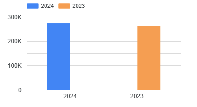

Dashboard Partisipasi Olahraga DKI Jakarta 2023-2024
Berikut adalah visualisasi data yang telah diolah menggunakan Looker Studio.
5.141.266
Jumlah Partisipan
6
Wilayah
OLAHRAGA
Kegiatan Utama
534.207
Periode Data
Grafik 1: Perbandingan Partisipasi per Tahun

Grafik menunjukkan tren partisipasi olahraga dari tahun 2023 ke 2024
Grafik 2: Distribusi Partisipasi per Wilayah
Distribusi partisipasi olahraga berdasarkan wilayah di DKI Jakarta
Grafik 3: Komposisi Jenis Kegiatan
Komposisi berbagai jenis kegiatan olahraga yang dilakukan
Grafik 4: Peringkat Lokasi Fasilitas
Peringkat lokasi fasilitas olahraga yang paling banyak digunakan